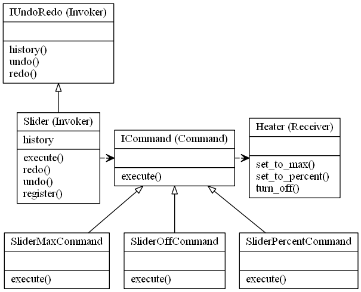

Command Design Pattern (Undo/Redo)
Video Lecture
Skillshare : https://skl.sh/34SM2Xg
Udemy : Command (Undo/Redo) Design Pattern
Description
This is part 2 of the Command Design Pattern tutorial, where I create a slider, instead of the switch from part 1.
The slider also accepts a variable percentage, rather than an ON/OFF.
The history also records the variable setting.
And I also add UNDO/REDO to the Invoker so that you can go backwards and forwards through time.

Source Code
slider_command.py
from abc import ABCMeta, abstractstaticmethod import time class ICommand(metaclass=ABCMeta): """The command interface, which all commands will implement""" @abstractstaticmethod def execute(*args): """The required execute method which all command obejcts will use""" class IUndoRedo(metaclass=ABCMeta): """The Undo Redo interface""" @abstractstaticmethod def history(): """the history of the states""" @abstractstaticmethod def undo(): """for undoing the hsitory of the states""" @abstractstaticmethod def redo(): """for redoing the hsitory of the states""" class Slider(IUndoRedo): """The Invoker Class""" def __init__(self): self._commands = {} self._history = [(0.0, "OFF", ())] # A default setting of OFF self._history_position = 0 # The position that is used for UNDO/REDO @property def history(self): """Return all records in the History list""" return self._history def register(self, command_name, command): """All commands are registered in the Invoker Class""" self._commands[command_name] = command def execute(self, command_name, *args): """Execute a pre defined command and log in history""" if command_name in self._commands.keys(): self._history_position += 1 self._commands[command_name].execute(args) if len(self._history) == self._history_position: # This is a new event in hisory self._history.append((time.time(), command_name, args)) else: # This occurs if there was one of more UNDOs and then a new # execute command happened. In case of UNDO, the history_position # changes, and executing new commands purges any history after # the current position""" self._history = self._history[:self._history_position+1] self._history[self._history_position] = { time.time(): [command_name, args] } else: print(f"Command [{command_name}] not recognised") def undo(self): """Undo a command if there is a command that can be undone. Update the history position so that further UNDOs or REDOs point to the correct index""" if self._history_position > 0: self._history_position -= 1 self._commands[ self._history[self._history_position][1] ].execute(self._history[self._history_position][2]) else: print("nothing to undo") def redo(self): """Perform a REDO if the history_position is less than the end of the history list""" if self._history_position + 1 < len(self._history): self._history_position += 1 self._commands[ self._history[self._history_position][1] ].execute(self._history[self._history_position][2]) else: print("nothing to REDO") class Heater: """The Receiver""" def set_to_max(self): print("Heater is ON and set to MAX (100%)") def set_to_percent(self, *args): print(f"Heater is ON and set to {args[0][0]}%") def turn_off(self): print("Heater is OFF") class SliderMaxCommand(ICommand): """A Command object, which implements the ICommand interface""" def __init__(self, heater): self._heater = heater def execute(self, *args): self._heater.set_to_max() class SliderPercentCommand(ICommand): """A Command object, which implements the ICommand interface""" def __init__(self, heater): self._heater = heater def execute(self, *args): self._heater.set_to_percent(args[0]) class SliderOffCommand(ICommand): """A Command object, which implements the ICommand interface""" def __init__(self, heater): self._heater = heater def execute(self, *args): self._heater.turn_off() if __name__ == "__main__": # The Client is the main python app # The HEATER is the Receiver HEATER = Heater() # Create Commands SLIDER_MAX = SliderMaxCommand(HEATER) SLIDER_PERCENT = SliderPercentCommand(HEATER) SLIDER_OFF = SliderOffCommand(HEATER) # Register the commands with the invoker (Switch) SLIDER = Slider() SLIDER.register("MAX", SLIDER_MAX) SLIDER.register("PERCENT", SLIDER_PERCENT) SLIDER.register("OFF", SLIDER_OFF) # Execute the commands that are registered on the Invoker SLIDER.execute("PERCENT", 10) SLIDER.execute("PERCENT", 20) SLIDER.execute("PERCENT", 30) SLIDER.execute("PERCENT", 40) SLIDER.execute("PERCENT", 50) print(SLIDER.history) SLIDER.undo() SLIDER.undo() SLIDER.undo() SLIDER.redo() SLIDER.undo() SLIDER.undo() SLIDER.execute("PERCENT", 90) SLIDER.execute("MAX") SLIDER.execute("OFF") print(SLIDER.history) SLIDER.undo() SLIDER.redo() print(SLIDER.history)